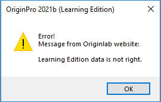

FAQ-1092 Originをアクティブ化すると、「Learning Editionデータが正しくありません」というエラーメッセージが表示されます。どうしたらよいでしょうか？
Learning-Edition-Data-Is-Not-Right
最終更新日:2021/4/6
Learning Editionをアクティブ化使用とすると、Learning Editionデータが正しくありませんといったエラーメッセージが表示されます。
- 
正しいシリアル番号でLearning Editionをインストールしたかを再度確認してください。
- ヘルプ：バージョン情報メニューを選択して、インストールされているシリアル番号を確認できます。Eメールで受け取った番号と同じかどうかを確認してください。異なる場合は、このクイックヘルプページの指示に従って修正してください。
- Learning Editionを複数回申請した場合、シリアル番号が異なる場合があります。最後のメールに記載されているシリアル番号でOriginをインストールしているかを確認してください。
インストールされているシリアル番号が正しいのに問題が解決しない場合は、le@originlab.com宛に電子メールを送信してください。Learning Editionの適用に使用したプロダクトキーとメールアドレスを併記してください。
キーワード:ライセンス, LE, learning eddition, learning バージョン, エラー, アクティブ化できない